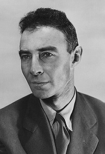

J. Robert Oppenheimer

summary:
J. Robert Oppenheimer (born Julius Robert Oppenheimer; /ˈɒpənhaɪmər/ OP-ən-hy-mər; April 22, 1904 – February 18, 1967) was an American theoretical physicist who served as the director of the Manhattan Project's Los Alamos Laboratory during World War II. He is often called the "father of the atomic bomb" for his role in overseeing the development of the first nuclear weapons.
Born in New York City, Oppenheimer obtained a degree in chemistry from Harvard University in 1925 and a doctorate in physics from the University of Göttingen in Germany in 1927, studying under Max Born. After research at other institutions, he joined the physics faculty at the University of California, Berkeley, where he was made a full professor in 1936. Oppenheimer made significant contributions to physics in the fields of quantum mechanics and nuclear physics, including the Born–Oppenheimer approximation for molecular wave functions; work on the theory of positrons, quantum electrodynamics, and quantum field theory; and the Oppenheimer–Phillips process in nuclear fusion. With his students, he also made major contributions to astrophysics, including the theory of cosmic ray showers, and the theory of neutron stars and black holes.
In 1942, Oppenheimer was recruited to work on the Manhattan Project, and in 1943 was appointed director of the project's Los Alamos Laboratory in New Mexico, tasked with developing the first nuclear weapons. His leadership and scientific expertise were instrumental in the project's success. On July 16, 1945, he was present at the first test of the atomic bomb, Trinity. In August 1945, thes weapons were used against Japan in the bombings of Hiroshima and Nagasaki, to date the only use of nuclear weapons in an armed conflict.
In 1947, Oppenheimer was appointed director of the Institute for Advanced Study in Princeton, New Jersey, and chairman of the General Advisory Committee of the new United States Atomic Energy Commission (AEC). He lobbied for international control of nuclear power to avert nuclear proliferation and a nuclear arms race with the Soviet Union, and opposed the development of the hydrogen bomb, partly on ethical grounds. During the second Red Scare, these stances, together with his past associations with the Communist Party USA, led to an AEC security hearing in 1954 and the revocation of his security clearance. He continued to lecture, write, and work in physics, and in 1963 was given the Enrico Fermi Award as a gesture of political rehabilitation. In 2022, the U.S. government vacated the 1954 revocation of his security clearance.